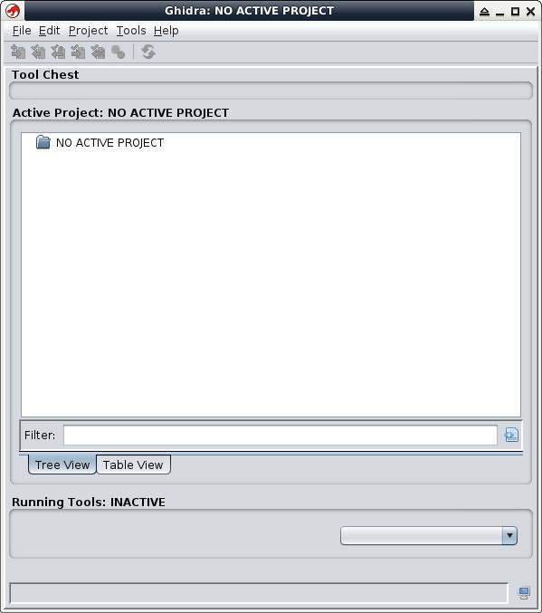

參考資訊：
https://ghidra-sre.org/
https://www.cjavapy.com/article/90/
https://www.oracle.com/java/technologies/downloads/
https://www.cnblogs.com/shenyuanhaojie/p/15744357.html
安裝JDK：
$ cd $ wget https://download.oracle.com/java/24/latest/jdk-24_linux-x64_bin.tar.gz $ tar xvf jdk-24_linux-x64_bin.tar.gz -C ~/ $ export JAVA_HOME=~/jdk-24.0.1 $ export CLASSPATH=.:$JAVA_HOME/lib/tools.jar:$JAVA_HOME/lib/dt.jar $ export PATH=$JAVA_HOME/bin:$PATH
安裝Ghidra：
$ cd $ wget https://github.com/NationalSecurityAgency/ghidra/releases/download/Ghidra_11.0.1_build/ghidra_11.0.1_PUBLIC_20240130.zip $ unzip ghidra_11.0.1_PUBLIC_20240130.zip $ cd ghidra_10.2.3_PUBLIC $ ./ghidraRun
